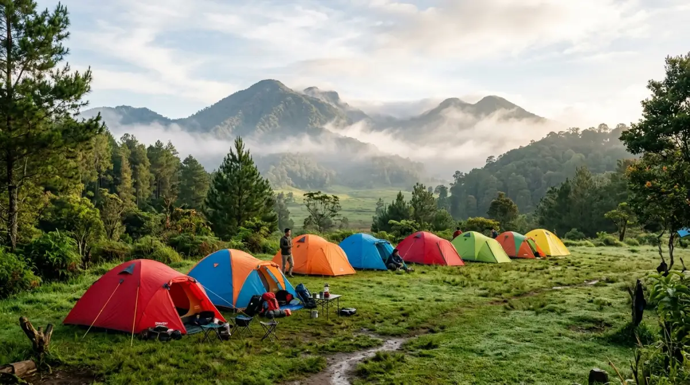
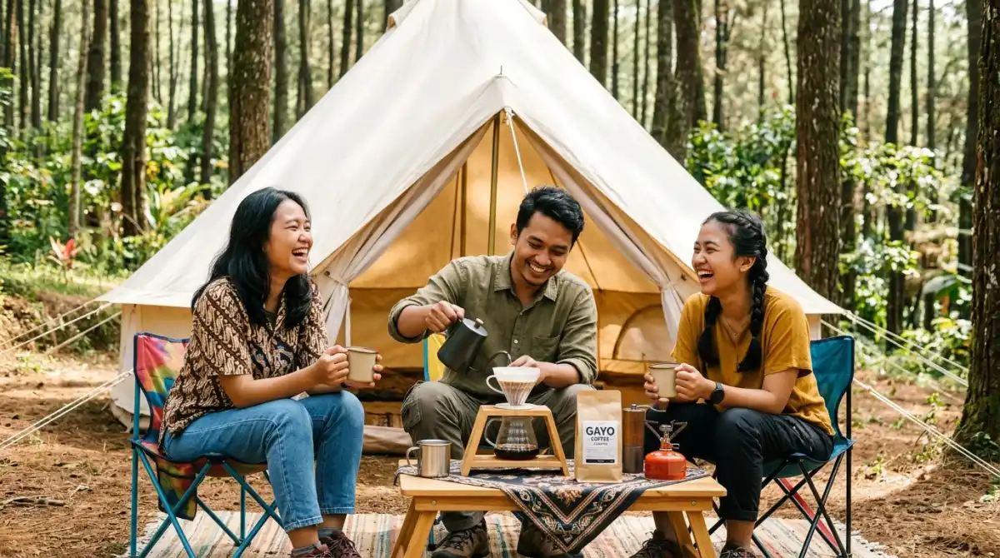

Suasana santai camping di alam terbuka — pelarian sempurna dari hiruk-pikuk rutinitas perkotaan.Berapa banyak akhir pekan yang sudah kamu habiskan hanya dengan rebahan sambil bergulir tanpa arah di media sosial, merasa kehabisan energi setelah lima hari penuh bertempur dengan target Key Performance Indicator (KPI) dan revisi tiada henti dari atasan? Waktu terus berlalu, dan tanpa sadar, rutinitas semacam ini perlahan mengikis semangat serta kewarasanmu. Sering kali kita menunda untuk mencari udara segar ke alam karena berasumsi aktivitas itu merepotkan.
Padahal, ada begitu banyak kedamaian yang terlewatkan jika kamu terus menunda. Pertanyaannya, sampai kapan kamu mau membiarkan usia dan tenaga prima ini berlalu begitu saja di balik meja kerja? Jika belakangan ini kamu sering melihat kolega kantormu membagikan momen damai menyeduh kopi di depan tenda dan kamu mulai penasaran camping artinya apa serta mengapa aktivitas ini begitu diidamkan, maka kamu sedang membaca panduan yang tepat. Mari kita urai bersama agar kamu bisa segera merencanakan pelarian manismu dari hiruk-pikuk kota.
Sebenarnya, Camping Artinya Apa Sih?
Jika kita membuka kamus atau literatur dasar, camping artinya kegiatan rekreasi di luar ruangan di mana para pesertanya (yang disebut camper) meninggalkan kawasan perkotaan dan rumah mereka yang nyaman untuk menghabiskan waktu di alam bebas, biasanya dengan menggunakan tenda sebagai tempat tinggal sementara. Namun, mendefinisikan kegiatan ini hanya dari kacamata bahasa rasanya terlalu kaku dan tidak mencakup esensi emosional di baliknya.
Dalam konteks kehidupan modern saat ini, makna berkemah telah jauh berkembang. Ini bukan lagi sekadar soal bertahan hidup (survival) di tengah hutan belantara dengan peralatan seadanya. Bagiku, dan bagi banyak penggiat alam bebas yang rutin berinteraksi di berbagai camping ground di Indonesia, berkemah adalah sebuah medium. Ia adalah alat untuk memutus sementara (kalau meminjam istilah teknologinya, hard reset) sistem otak kita yang terlalu bising oleh tuntutan pekerjaan, kemacetan lalu lintas, dan notifikasi ponsel.
Pergeseran Makna dari Bertahan Hidup Menjadi "Healing"
Zaman dulu, ketika mendengar kata berkemah, yang terbayang di benak kita mungkin adalah kegiatan Pramuka semasa sekolah. Kamu harus menggali parit, memasang pasak dengan tenaga ekstra, dan memasak nasi yang sering kali berujung setengah matang karena angin yang terlalu kencang mematikan api kompor spirtus.
Kini, konsep tersebut bergeser drastis. Berkemah telah bertransformasi menjadi sebuah pelarian terapeutik. Orang-orang berbondong-bondong pergi ke pegunungan bukan untuk menguji seberapa kuat mereka menahan penderitaan, melainkan untuk mencari ketenangan.
Kita mencari kontras; menukar lampu neon rumah dengan cahaya bintang, menukar suara mesin pendingin ruangan (AC) dengan embusan angin pegunungan, dan menukar kursi kerja ergonomis dengan kursi lipat outdoor yang mendekatkan kita pada tanah.
Evolusi Gaya Berkemah yang Wajib Kamu Tahu
Agar kamu tidak salah pilih dan akhirnya kapok di percobaan pertama, penting untuk memahami bahwa dunia perkemahan kini memiliki beberapa aliran atau gaya. Sama halnya dengan budaya kerja yang memiliki model Work From Office (WFO), Work From Home (WFH), atau Hybrid, gaya berkemah pun bisa disesuaikan dengan preferensi dan toleransimu terhadap "kerepotan".
1. Classic Camping: Menikmati Proses dan Kemandirian
Ini adalah gaya konvensional. Kamu membawa tenda sendiri, membawa sleeping bag, matras, dan peralatan masak portabel. Semuanya kamu siapkan dari rumah. Gaya ini sangat cocok bagi kamu yang menikmati proses.
Membangun tenda bersama pasangan atau teman-teman sebenarnya mirip dengan menyusun strategi project lintas divisi di kantor. Ada komunikasi yang harus dijaga, ada pembagian tugas (siapa yang mendirikan tenda, siapa yang menyiapkan bahan makanan), dan ada kepuasan luar biasa ketika "proyek" itu selesai dan tendamu berdiri kokoh.
2. Glamping (Glamorous Camping): Kemewahan Tanpa Repot
Jika kamu baru pertama kali ingin mencoba tidur di alam terbuka namun sama sekali tidak mau berkeringat membongkar muatan, glamping adalah jawabannya. Di Indonesia, tren ini melesat tajam. Kamu hanya perlu membawa koper berisi pakaian dan niat untuk bersantai.
Pengelola sudah menyiapkan tenda besar bergaya safari, lengkap dengan kasur empuk, selimut tebal, lampu estetik, colokan listrik, bahkan kamar mandi water heater pribadi. Glamping menjembatani jurang antara keinginan berada di alam dan kebutuhan akan fasilitas sekelas hotel bintang tiga.
3. Campervan dan Motocamp: Kebebasan Bergerak
Bagi jiwa-jiwa nomaden yang mudah bosan dengan satu titik lokasi, gaya ini sangat diminati. Campervan menggunakan mobil yang dimodifikasi layaknya rumah berjalan, sementara motocamp menggunakan sepeda motor dengan box penyimpanan (pannier) untuk membawa peralatan.
Alih-alih menetap di satu area perkemahan, kamu bisa berpindah dari satu danau ke bukit lainnya. Ini adalah definisi kebebasan mutlak yang sangat bertolak belakang dengan rutinitas harian kita yang terpaku pada meja cubicle yang sama setiap harinya.

Camping artinya lebih dari sekadar mendirikan tenda — ini adalah medium untuk mereset pikiran yang terlalu bising oleh tuntutan pekerjaan.Mengapa Aktivitas Ini Makin Menjadi Kebutuhan Primer Pekerja?
Pernahkah kamu menyadari seberapa sering kita terpapar cahaya buatan setiap harinya? Dari layar laptop, lampu kantor, hingga layar ponsel sebelum tidur. Berdasarkan obrolanku dengan banyak pekerja urban yang akhirnya menjadikan berkemah sebagai hobi bulanan, ada beberapa alasan psikologis mengapa alam bebas selalu memanggil mereka kembali.
Detoks Digital Secara Alami
Di alam bebas, sinyal seluler sering kali menjadi barang mewah yang langka. Alih-alih mengutuk hilangnya sinyal, jadikan ini sebagai alasan paling valid untuk melakukan detoks digital. Kamu punya alasan tak terbantahkan untuk tidak merespons grup WhatsApp kantor di akhir pekan.
Ketika ponselmu kehilangan fungsinya sebagai alat komunikasi dan hanya menjadi kamera, saat itulah kamu benar-benar hadir seutuhnya (present). Sindrom getaran bayangan ponsel (phantom vibration syndrome) perlahan akan hilang, digantikan oleh kesadaran yang lebih peka terhadap lingkungan sekitar.
Menemukan Kembali Obrolan Bermakna (Deep Talk)
Coba ingat-ingat, kapan terakhir kali kamu mengobrol panjang lebar dengan pasangan atau sahabat tanpa ada satupun dari kalian yang melirik layar ponsel? Di area perkemahan, terutama saat malam turun dan udara semakin dingin, satu-satunya sumber kehangatan adalah api unggun dan segelas minuman hangat.
Suasana intim ini secara otomatis mendorong orang untuk melepaskan topeng sosialnya. Obrolan yang tercipta bukan lagi soal target kuartal depan, melainkan tentang impian personal, keluh kesah yang selama ini dipendam, hingga candaan ringan yang mengingatkan kita bahwa kita adalah manusia, bukan mesin pencetak uang.
"Kita butuh beristirahat justru agar bisa menyelesaikan semuanya dengan akal yang sehat. Jangan biarkan masa mudamu habis tertelan oleh hiruk pikuk beton ibukota."
— Refleksi Pelancong ModernPersiapan Cerdas Buat Kamu yang Baru Mau Mulai
Jika uraian di atas mulai menggerakkan hatimu, tahan dulu keinginan untuk langsung membuka marketplace dan memborong segala macam peralatan yang terlihat keren. Seperti halnya memulai bisnis baru, memulai hobi ini butuh strategi agar cash flow pribadimu tetap aman.
Pinjam Dulu atau Sewa, Beli Nanti
Kesalahan terbesar pemula adalah membeli tenda mahal seharga jutaan rupiah, lalu setelah mencoba satu kali, tenda tersebut berjamur di gudang karena ternyata mereka tidak terlalu menyukai udara dingin pegunungan. Solusinya? Sewalah peralatan terlebih dahulu. Saat ini, menjamur tempat penyewaan alat outdoor yang menyewakan tenda bersih, kompor, hingga kursi lipat dengan harga sangat terjangkau. Cara ini sangat bijak untuk menguji apakah gaya liburan ini cocok dengan kepribadianmu atau tidak.
Pilih Lokasi yang Ramah Pemula
Jangan langsung memilih lokasi ekstrem yang mengharuskanmu berjalan kaki (trekking) berjam-jam dari tempat parkir. Untuk awal, carilah camping ground komersial yang mobilnya bisa parkir tepat di sebelah tendamu (camper park). Pastikan juga lokasi tersebut memiliki ulasan yang baik mengenai kebersihan toilet dan ketersediaan air bersih. Memilih lokasi yang "ramah" akan memastikan impresi pertamamu terhadap aktivitas ini tetap positif.
Waktunya Mengambil Jeda Sebelum Terlambat
Pekerjaan dan kewajiban tidak akan pernah ada habisnya. Jika kamu menyelesaikan satu masalah hari ini, percayalah, masalah baru sudah menunggu di meja kerjamu esok pagi. Kita sering kali terjebak dalam ilusi bahwa kita harus menyelesaikan semuanya sebelum bisa beristirahat. Kenyataannya, kita butuh beristirahat justru agar bisa menyelesaikan semuanya dengan akal yang sehat.
Mengetahui makna camping artinya apa hanyalah gerbang awal. Sensasi aslinya baru akan kamu pahami saat kamu merasakan embun pagi menyentuh kulitmu dan aroma tanah basah sehabis hujan merasuk ke penciumanmu. Jangan biarkan masa mudamu habis tertelan oleh hiruk pikuk beton ibukota. Berikan dirimu hak untuk beristirahat.
Rencanakan pelarian kecilmu akhir pekan ini. Ajak orang terdekat, matikan laptopmu, dan biarkan alam bekerja memulihkan energi yang selama ini terbuang. Kamu pantas mendapatkannya, sebelum momen dan kesempatan itu benar-benar terlewatkan begitu saja.
FAQ — Camping Artinya Apa